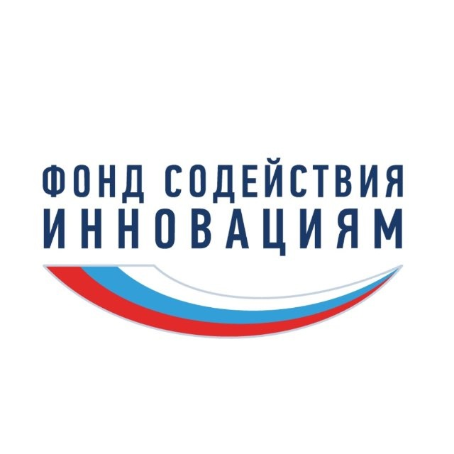

Я представляю компанию
Зарегистрируйтесь, создайте исследование и добавьте вопросы. Укажите аудиторию и опубликуйте опрос. Когда придут ответы, откройте результаты: там доступны статистика, AI-анализ и ассистент.
Создать аккаунт компании ↗Платформа исследований аудитории
Veyra помогает компаниям понять свою аудиторию: собрать мнения, увидеть закономерности и найти идеи для развития продукта.
Продукт уже работает в браузере — ничего устанавливать не нужно.
Уже есть аккаунт? Войти в Veyra
Зарегистрируйтесь, создайте исследование и добавьте вопросы. Укажите аудиторию и опубликуйте опрос. Когда придут ответы, откройте результаты: там доступны статистика, AI-анализ и ассистент.
Создать аккаунт компании ↗Зарегистрируйтесь и заполните профиль. Выберите подходящий опрос, прочитайте описание и нажмите «Начать опрос». Ответьте в чате и завершите анкету — баллы появятся в разделе «Баллы».
Стать участником ↗Компания создаёт исследование и определяет аудиторию. Участники отвечают на вопросы в удобном формате чата.
Платформа собирает результаты в статистику. AI помогает выделить темы, сформулировать выводы и найти подтверждающие цитаты.
Команда использует обратную связь, чтобы проверять гипотезы и принимать решения о продукте и коммуникации.

При поддержке
Проект разработан при поддержке Фонда содействия инновациям.
Сведения о компании
Общество с ограниченной ответственностью «ИИНСАЙТ»